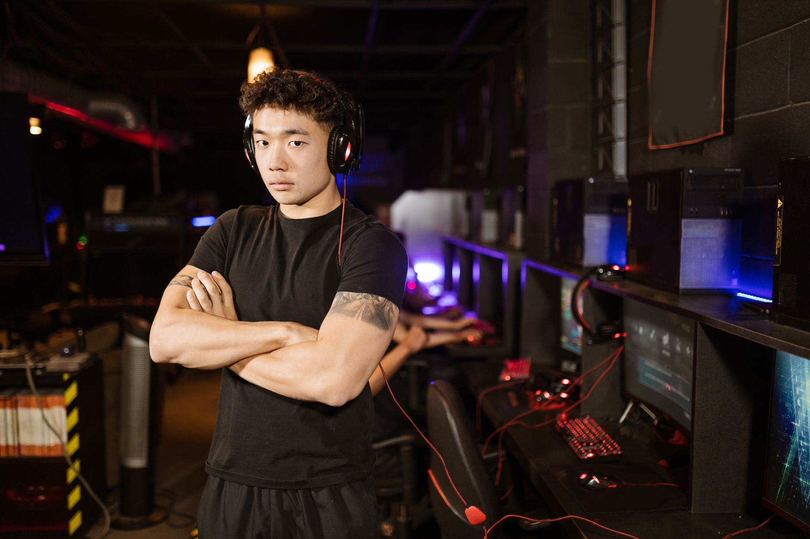

The mental struggle of professional gaming
The life of a professional esports athlete is frequently viewed through the lens of mechanical skill and lightning-fast reflexes. However, beneath the surface of every high-level match lies a complex psychological battleground. For players like YEKINDAR, the pressure to perform at a consistent level can lead to significant mental fatigue and self-doubt.
When performance dips, the scrutiny from fans, analysts, and even teammates can create a feedback loop of negativity. This environment makes it incredibly difficult for players to maintain their confidence, especially when they feel they are no longer meeting the high standards they once set for themselves.
Finding strength through uncertainty
In a recent interview, YEKINDAR touched upon the profound importance of finding the inner strength to push through periods of intense skepticism. He noted that the journey back to form was not just about practicing aim or learning new utility lineups, but about a fundamental shift in his mindset.
Finding strength to overcome all the doubts was something very important for me.
This statement resonates with many in the community who have witnessed the rise and fall of various superstars. It highlights that professional gaming is as much a test of character as it is a test of dexterity. Overcoming doubt requires a level of introspection that many athletes struggle to find during the heat of a tournament season.
The impact of doubt on team dynamics
Individual struggles rarely stay contained within a single player. When a core member of a roster experiences a crisis of confidence, it can ripple through the entire team structure. Communication may falter, decision-making becomes hesitant, and the overall synergy that defines top-tier teams begins to erode.
YEKINDAR's ability to navigate these personal hurdles is crucial not just for his own career longevity, but for the stability of his organization. A player who can master their own mind becomes a much more reliable asset in the long run, providing a foundation of stability for their teammates to build upon.
Strategies for maintaining peak performance
How do elite players manage these psychological waves? While every individual has a unique approach, several common themes emerge from the most successful professionals in the industry today. It is no longer enough to simply play for ten hours a day; one must also manage their mental health proactively.
By implementing these structured approaches, players can create a buffer against the inevitable highs and lows of professional competition. YEKINDAR's journey serves as a testament to the fact that mental fortitude is a skill that can be developed and refined with time and dedication.
Looking toward the future of esports
As the esports industry continues to grow in scale and professionalization, the conversation around mental health is becoming more mainstream. Teams are increasingly investing in support staff to ensure that their players are equipped to handle the psychological rigors of the global stage.
We are seeing a shift where vulnerability is no longer seen as a weakness, but as a step toward greater strength. When players like YEKINDAR speak openly about their doubts, they pave the way for a healthier, more sustainable ecosystem for the next generation of competitors.
As teams fight for dominance in major tournaments, the ability to remain mentally unshakable will be the ultimate competitive advantage. Whether it is a single player finding their footing or a whole team rising through the ranks, the mental game remains the most important factor in achieving greatness.
Conclusion and related news
The journey of a pro player is never a straight line. It is a series of peaks and valleys, and as YEKINDAR has shown, the ability to navigate the valleys is what defines a true champion. His resilience offers hope to many who are currently battling their own uncertainties in the competitive arena.
While individual mental strength is vital, the collective strength of a team is what drives tournament results. For more insights into how top-tier teams are performing on the global stage, check out our coverage of how MOUZ Defeats Vitality to Secure Third Place in Romania at https://dhyey.bond/blog/mouz-defeats-vitality-to-secure-third-place-in-romania/. Stay tuned to Dhyey Bond for more esports updates.
See Also
If you enjoyed this Esports News article, check out MOUZ Defeats Vitality to Secure Third Place in Romania for more useful reading.